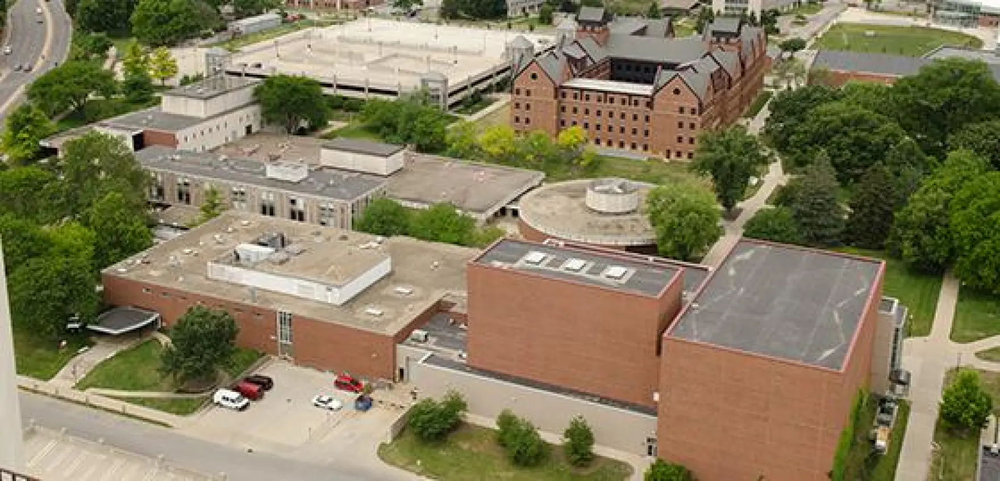

Colby Jennings
The School of Creative Technologies offers students opportunities to explore many different areas of technology and creative media. Students can study video, sound, electronic music, music production, gaming, motion graphics, interactivity, AR/VR, UI/UX, mobile development, web development, and programming concepts. The program allows students to combine creative interests with technical skills and prepares them for many different careers in creative technology.
B.A. and B.S.
Campus Box 5750
Phone: (309) 438-2875